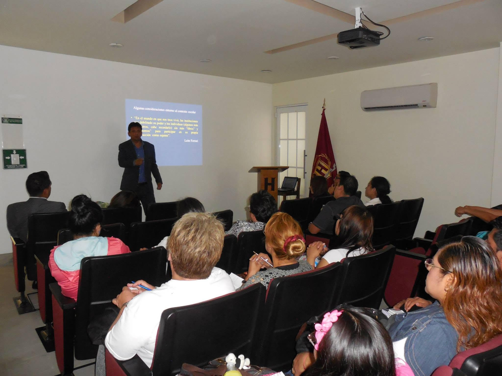
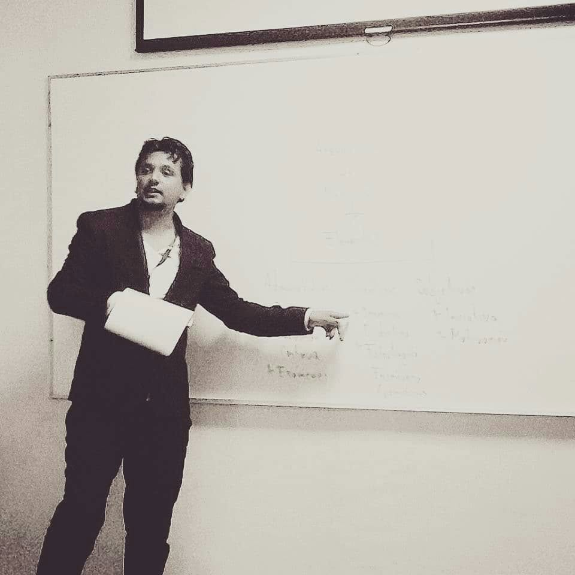
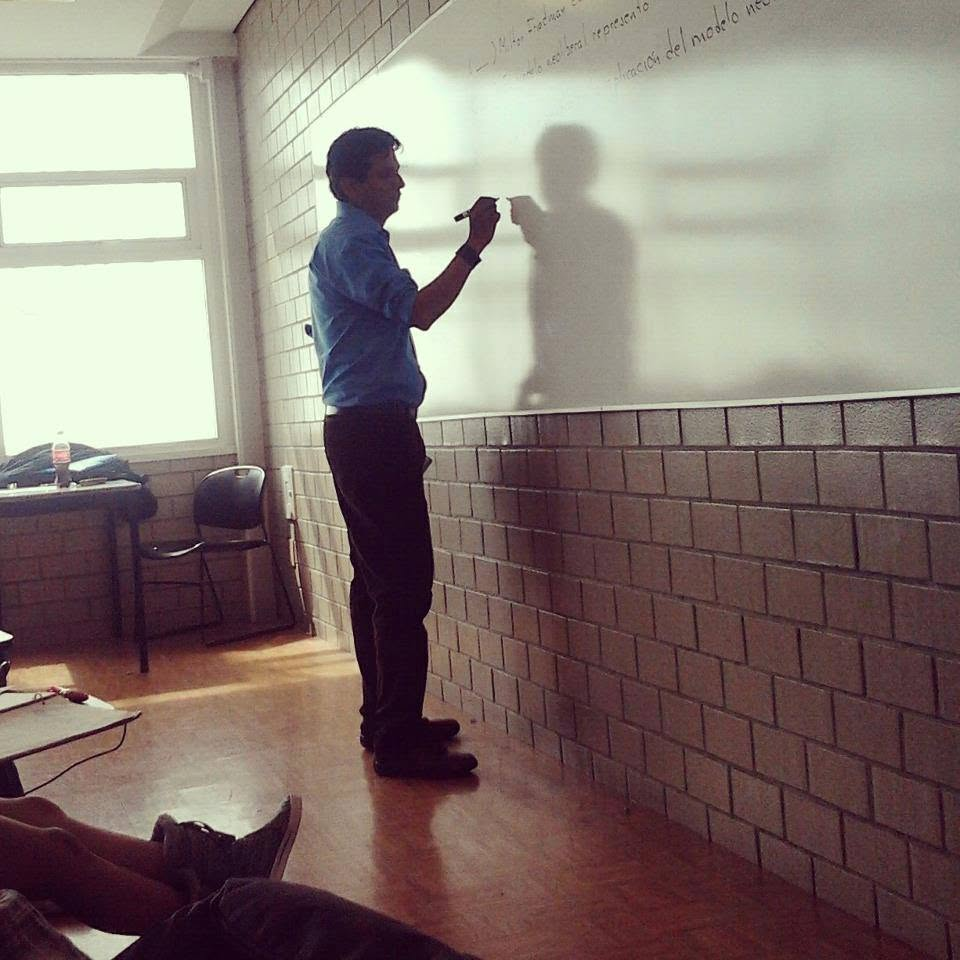

Bienvenido a mi portal académico. Este espacio reúne mi trayectoria profesional, formación académica, áreas de especialización y recursos orientados al fortalecimiento de la educación jurídica mediante metodologías innovadoras y el uso estratégico de la tecnología.
Años de experiencia docente
Áreas disciplinares impartidas
Compromiso con la innovación educativa
Docente universitario con experiencia en educación secundaria, media superior y superior. Mi práctica profesional integra el Derecho, la Educación y las Ciencias Sociales mediante estrategias centradas en el aprendizaje significativo, la innovación pedagógica y la incorporación de tecnologías digitales. Mi interés académico se orienta hacia la pedagogía jurídica, la asesoría legal preventiva, el diseño curricular, la investigación educativa y la Inteligencia Artificial aplicada a la enseñanza del Derecho.
Especialización en procesos de enseñanza, aprendizaje e innovación educativa.
Formación jurídica con enfoque preventivo y educativo.
Impartición de cursos de formación del capital humano.
Reconocimiento académico.
Explora las materias y accede a rutas de aprendizaje, contenidos, actividades y recursos académicos.
Evalúa tus conocimientos jurídicos mediante preguntas interactivas con retroalimentación inmediata.
Ingresar al QuizAnaliza problemas jurídicos aplicando legislación, doctrina y argumentación jurídica.
PróximamenteHerramienta educativa para practicar análisis jurídico mediante inteligencia artificial.
PróximamenteUna experiencia interactiva para acercarse al funcionamiento de un proceso judicial y poner en práctica la toma de decisiones.
Ingresar al simuladorRegistro visual de clases, ponencias e impartición de cursos académicos.

Impartición de cátedra universitaria

Participación en ponencias y coloquios

Aplicación de pedagogía jurídica